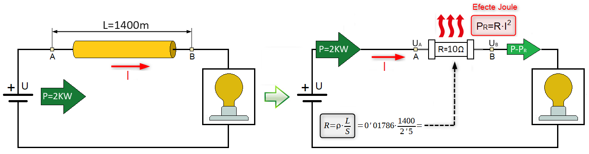
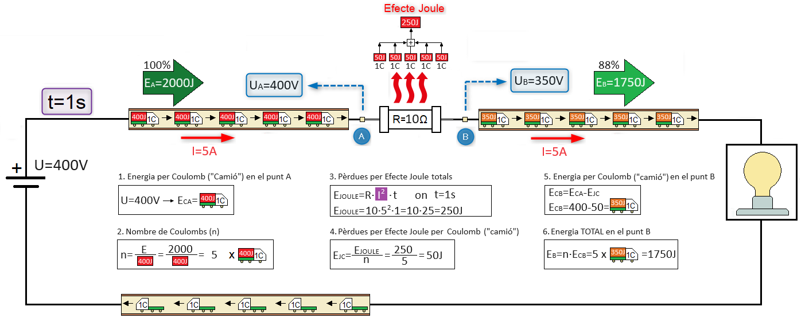
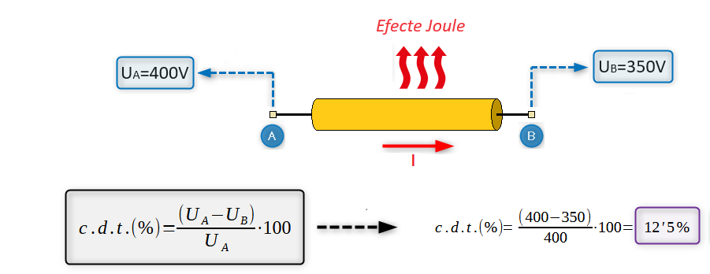
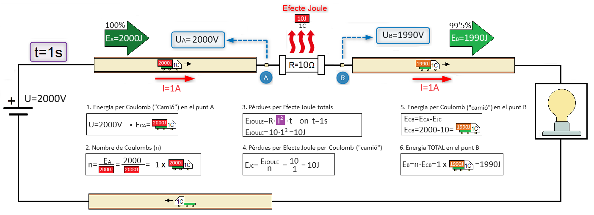
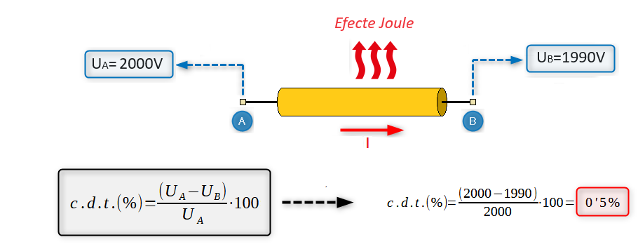
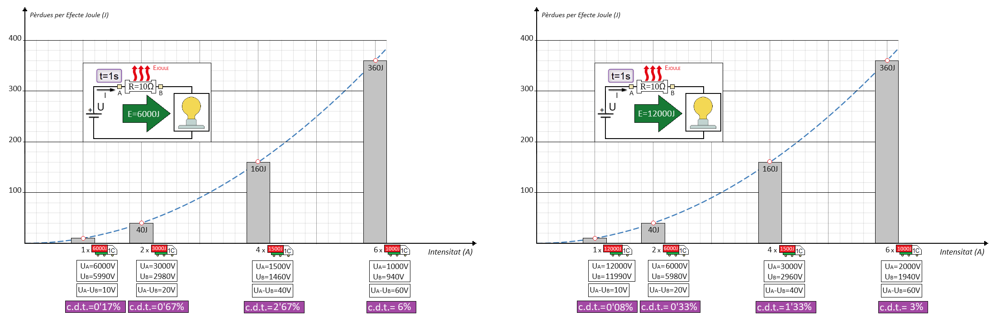

Transport de l'energia en alta i baixa tensió
Exemple
Volem subministrar una potència elèctrica de P=12W (2000J per segon) a un sistema d'il·luminació que està situat a una distancia de L=1400m. El conductor utilitzat per fer el transport d'energia és de coure amb una secció de S=2'5mm2, la qual cosa ens obliga a tindre en compte la seua resistència elèctrica e incorporar-la al circuit elèctric equivalent per poder calcular les pèrdues que es produeixen per efecte joule durant el transport d'energia elèctrica.

El que anem a fer ara es veure com afecten aquestes pèrdues per efecte joule al transport de l'energia si aquest es fa en baixa tensió (U=400V≤1500V) o en alta tensió (U=2000V>1500V).
Transport d'energia en Baixa Tensió

- La tensió del generador (U=UA=400V) determina l'energia que transportarà cada Coulomb en iniciar el transport, es a dir, ECA=400J
- En aquest cas ens fa falta cinc Coulombs ("camions") per transportar tota l'energia (n=5→I=5A).
- Ara, amb el valor de I, podem calcular les pèrdues per efecte joule que es produeixen durant el transport de l'energia elèctrica (EJOULE=250).
- En aquest cas les pèrdues per efecte joule es reparteixen entre els cinc coulombs que transporten l'energia (50J per coulomb).
- En finalitzar el transport (punt B) el coulomb sortirà amb una energia 50J inferior a la que tenia en el punt A (ECB=350J).
- En aquest cas, l'energia es transportada pels cinc coulombs. Per tant l'energia que arribarà al receptor és EB=1750J
- Els paquets d'energia del coulombs que arriben al receptor determinen la tensió del punt B: UB=350V
- En electricitat les pèrdues produïdes per efecte joule en el transport de l'energia no es mesuren en Joules, sinó amb Volts. Es mesura la caiguda de tensió o diferència de potencial existent entre el punt d'inici del transport de l'energia elèctrica (punt A) i el punt final (punt B).

Transport d'energia en Alta Tensió

- La tensió del generador (U=UA=2000V) determina l'energia que transportarà cada Coulomb en iniciar el transport, es a dir, ECA=2000J
- En aquest cas tan sols ens fa falta un Coulomb per transportar tota l'energia (n=1→I=1A)
- Ara, amb el valor de I, podem calcular les pèrdues per efecte joule que es produeixen durant el transport de l'energia elèctrica (EJOULE=10J).
- En aquest cas les pèrdues per efecte joule s'assignen al únic coulomb que transporta l'energia.
- En finalitzar el transport (punt B) el coulomb sortirà amb una energia 10J inferior a la que tenia en el punt A.
- En aquest cas, tota l'energia es transportada per un únic coulomb. Per tant l'energia que arribarà al receptor és EB=1990J.
- Els paquets d'energia del coulombs que arriben al receptor determinen la tensió del punt B: UB=1990V
- En electricitat les pèrdues produïdes per efecte joule en el transport de l'energia no es mesuren en Joules, sinó amb Volts. Es mesura la caiguda de tensió o diferència de potencial existent entre el punt d'inici del transport de l'energia elèctrica (punt A) i el punt final (punt B).

Conclusions
Les pèrdues per efecte joule en el transport d'energia són directament proporcionals al nombre de coulombs per segon al quadrat (I2) però són independents de la quantitat d'energia que transporta cada coulomb

hola
S'ha d'utilitzar el transport en alta tensió quan es volen minimitzar les pèrdues per efecte joule en el transport energia als punts de consum que es troben allunyats dels punts de generació.
hola